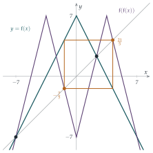
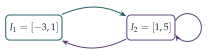

STEP III 2025, 문제 2
다음으로 넘어가기 전에 문제를 먼저 읽어 보자. 이 문제는 OCR에서 내려받을 수 있는 2025년 STEP 문제지 모음(zip 파일)의 STEP III 문제지에 있다: www.ocr.org.uk/Images/750486-2025-past-papers.zip
도입
1975년 Tien-Yien Li와 James Yorke는 American Mathematical Monthly에 논문 한 편을 발표했는데, 그 제목은 수학에서 가장 유명한 제목 가운데 하나가 되었다. 바로 “Period three implies chaos(주기 3이면 혼돈이다)”이다. 이들은 구간에서 그 구간 자신으로 가는 연속함수(continuous function)가 주기(period) \(3\)인 점(정확히 세 단계 뒤에 처음으로 되돌아오는 시작값)을 가지면, 모든 주기의 점을 가진다는 것을 증명했다. \(1\), \(2\), \(4\), \(5\), \(17\), \(1000\), 그 무엇이든 말이다. 또한 이 논문은 “혼돈(chaos)”이라는 낱말을 수학에 들여왔다.
2025년에 출제된 이 문제는 그 정리를 직접 손으로 짚어 보는 여행이다. 함수 \(\mathrm{f}(x) = 7 - 2|x|\)는 두 직선으로 이루어져 있으므로 모든 것을 정확히 계산할 수 있다. 이 함수의 \(2\)-순환(2-cycle)과 \(3\)-순환을 구하면서, 하나가 존재하면 나머지가 모두 존재할 수밖에 없는 이유를 보게 된다.
시작하기 전에
\(y = 7 - 2|x|\)의 그래프는 어떤 모양인가? 이 그래프는 직선 \(y = x\)와 어디에서 만나는가? 이 함수는 구간 \([-7, 7]\)을 어디로 보내는가?
그래프는 꼭짓점이 \((0, 7)\)이고 기울기가 \(\pm2\)인, 뒤집힌 V자 모양이다. 이 그래프는 \(x = 7 - 2x\) (\(x \geq 0\))인 곳, 곧 \(x = \frac73\)에서, 그리고 \(x = 7 + 2x\) (\(x < 0\))인 곳, 곧 \(x = -7\)에서 \(y = x\)와 만난다. 이것들이 고정점(fixed point)이다. 여기서 시작하면 수열은 전혀 움직이지 않는다. 또 \(\mathrm{f}(-7) = \mathrm{f}(7) = -7\)이고 \(\mathrm{f}(0) = 7\)이므로, \(\mathrm{f}\)는 \([-7, 7]\)을 자기 자신 위로 보내는데, 이때 구간을 두 배 길이로 늘린 다음 반으로 접는다.
차근차근 풀기
단계 1 \(\mathrm{f}\circ\mathrm{f}\)의 그래프
\(x\)가 \(-7\)에서 \(7\)까지 움직일 때, \(\mathrm{f}(x)\)는 \(-7\)에서 \(7\)까지 올라갔다가 다시 \(-7\)로 내려온다. 그러면 \(\mathrm{f}(\mathrm{f}(x))\)는 어떻게 움직이는가?
\(x\)가 \(-7\)에서 \(0\)까지 움직이는 동안 \(\mathrm{f}(x)\)는 \([-7, 7]\) 전체를 지나가므로, \(\mathrm{f}(\mathrm{f}(x))\)는 V자 하나를 온전히 그린다. 곧 \(-7\)에서 \(7\)까지 올라갔다가 다시 내려온다. \(x\)가 \(0\)에서 \(7\)까지 움직일 때도 마찬가지이다. 따라서 \([-7, 7]\)에서 \(\mathrm{f}\circ\mathrm{f}\)의 그래프는 뒤집힌 W자 모양이다. 기울기가 \(\pm4\)인 네 개의 선분으로 이루어지고, 각 선분은 높이 \(-7\)과 \(7\) 사이를 오가며, \(x = \pm\frac72\) (\(\mathrm{f}(x) = 0\)인 곳)에서 꼭대기에 이르고 \(x = 0\)에서 \(-7\)까지 내려간다(그림 8.8.1). \([-7, 7]\) 바깥에서는 두 그래프 모두 가파르게 떨어진다.
단계 2 \(\mathrm{f}(\mathrm{f}(x)) = x\) 풀기
네 선분은 각각 대각선 \(y = x\)와 정확히 한 번씩 만난다. 그 가운데 두 교점은 이미 알고 있다. 왜 그런가? 중첩된 절댓값(absolute value)을 풀어 전개하지 않고 나머지 두 교점을 어떻게 구할 수 있을까?
고정점 \(\frac73\)과 \(-7\)은 당연히 \(\mathrm{f}(\mathrm{f}(x)) = x\)를 만족한다. 그 밖의 해 \(p\)는 \(q = \mathrm{f}(p) \neq p\)인 \(2\)-순환 \(p \to q \to p\)에 속한다. 부호를 따져 보자. \(p\)와 \(q\)가 모두 양수이면 \(q = 7 - 2p\)이고 \(p = 7 - 2q\)이므로 \(p = q = \frac73\)일 수밖에 없다. 둘 다 음수이면 같은 논법으로 \(-7\)을 얻는다. 따라서 하나는 양수, 하나는 음수이다. \(p > 0 > q\)라 하면 \[q = 7 - 2p, \qquad p = 7 + 2q.\] 그러면 \(p = 7 + 14 - 4p\)이므로 \(p = \frac{21}{5}\), \(q = -\frac75\)이고, 실제로 \(q < 0\)이다.
\([-7, 7]\) 바깥에는 해가 없다. \(x > 7\)이면 \(\mathrm{f}(\mathrm{f}(x)) = 21 - 4x < x\)이고, \(x < -7\)이면 \(\mathrm{f}(\mathrm{f}(x)) = 21 + 4x < x\)이기 때문이다. 따라서 네 해는 \[x = -7, \quad -\tfrac75, \quad \tfrac73, \quad \tfrac{21}{5}. \qed\] 수열의 주기가 \(2\)인 것은 정확히 \(a = \frac{21}{5}\) 또는 \(a = -\frac75\)일 때이다. (고정점에서는 수열이 상수이고 주기는 \(1\)이다.)
단계 3 늦게 순환에 들어서기
\(a = \frac{28}{5}\)이면 \(u_1 = 7 - \frac{56}{5} = -\frac{21}{5}\), \(u_2 = 7 - \frac{42}{5} = -\frac75\), \(u_3 = 7 - \frac{14}{5} = \frac{21}{5}\), \(u_4 = -\frac75\), 이런 식으로 계속된다. \(u_2\)부터는 수열이 \(2\)-순환이지만, \(u_0 = \frac{28}{5}\)과 \(u_1 = -\frac{21}{5}\)은 그 순환에 속하지 않는다.■
\(\frac{28}{5}\)를 스스로 찾아낼 수는 없었을까? 거꾸로 거슬러 올라가 보자. \(\mathrm{f}\)가 \(-\frac75\)로 보내는 수는 무엇인가?
\(\mathrm{f}(x) = -\frac75\)는 \(|x| = \frac{21}{5}\), 곧 \(x = \pm\frac{21}{5}\)을 뜻한다. 이 가운데 하나는 순환 안에 있고, 다른 하나인 \(-\frac{21}{5}\)은 순환으로 들어가는 입구이다. 다시 \(\mathrm{f}(x) = -\frac{21}{5}\)은 \(|x| = \frac{28}{5}\)을 뜻한다. \(\mathrm{f}\)는 2대1 함수이므로 \((-7, 7)\)의 모든 점은 원상(preimage)을 두 개 가지며, 따라서 모든 순환에는 그 순환으로 흘러 들어가는 시작값들이 나무 모양으로 달려 있다.
단계 4 \(3\)-순환
\(a = 1\)과 \(a = -\frac79\)에서 시작하는 수열을 계산하라.
\(a = 1\)에서 시작하면 \(1 \to 5 \to -3 \to 1\)이다. \(a = -\frac79\)에서 시작하면 \(-\frac79 \to \frac{49}{9} \to -\frac{35}{9} \to -\frac79\)이다. 둘 다 \(3\)-순환이다.
\(\mathrm{f}(\mathrm{f}(\mathrm{f}(x))) = x\)는 해를 몇 개까지 가질 수 있는가? 1단계에서처럼 그래프의 모양을 생각해 보라.
1단계의 논법을 되풀이하면, \(\mathrm{f}\)를 한 번 더 적용할 때마다 선분의 개수가 두 배가 된다. 따라서 \([-7, 7]\)에서 \(\mathrm{f}\circ\mathrm{f}\circ\mathrm{f}\)의 그래프는 기울기가 \(\pm8\)인 여덟 개의 선분으로 이루어진 지그재그이고, 각 선분은 \(-7\)에서 \(7\)까지 전체 높이를 지나간다(그림 8.8.2). 각 선분은 대각선과 정확히 한 번 만나므로 \([-7, 7]\)에는 해가 정확히 여덟 개 있고, (앞에서처럼) 바깥에는 해가 없다. 우리는 이미 여덟 개를 찾았다. 두 고정점과 두 \(3\)-순환의 여섯 점이다. 따라서 해는 \[x = -7,\ \tfrac73,\ 1,\ 5,\ -3,\ -\tfrac79,\ \tfrac{49}{9},\ -\tfrac{35}{9}. \qed\]
단계 5 \(3\)-순환에 늦게 들어서기
순환 \(1 \to 5 \to -3\)에서 거꾸로 거슬러 올라가자. \(u_3\)은 순환 안에 있지만 \(u_2\)는 그렇지 않기를 바란다. \(1\)의 원상은 \(|x| = 3\), 곧 \(x = \pm3\)을 만족한다. \(-3\)은 순환 안에 있으므로 \(u_2 = 3\)으로 잡는다. \(3\)의 원상은 \(|x| = 2\)를 만족하므로 \(u_1 = 2\)로 잡는다. \(2\)의 원상은 \(|x| = \frac52\)를 만족하므로 \(u_0 = \frac52\)로 잡는다. 그러면 \[\tfrac52 \to 2 \to 3 \to 1 \to 5 \to -3 \to 1 \to \cdots,\] 이고, \(\frac52\), \(2\), \(3\) 가운데 어느 것도 순환에 속하지 않는다. 따라서 \(a = \frac52\)가 조건을 만족한다.■


돌아보기
모양으로 세기. 중첩된 절댓값을 전개하는 대신 그래프의 선분 개수를 셌다. 그 덕분에 해를 몇 개 찾아야 하는지, 그리고 언제 모두 찾았는지를 알 수 있었다.
순환의 구조 이용하기. \(\mathrm{f}(\mathrm{f}(x)) = x\)의 해는 고정점이거나 둘씩 짝을 지어 나타나고, \(\mathrm{f}(\mathrm{f}(\mathrm{f}(x))) = x\)의 해는 고정점이거나 셋씩 묶여 나타난다.
거꾸로 거슬러 올라가기. (i)(d)와 (ii)(c)의 “늦게 들어서는 점”은 원상을 이용해 만들었다.
숨은 수학
모든 길이의 순환
4단계의 세기 방법은 단계 수가 몇이든 통한다. \(\mathrm{f}\)를 \(n\)번 적용한 것을 \(\mathrm{f}^n\)으로 쓰자. \([-7, 7]\)에서 \(\mathrm{f}^n\)의 그래프는 각각 전체 높이를 지나가는 \(2^n\)개의 선분으로 이루어지므로, \(\mathrm{f}^n(x) = x\)의 해는 정확히 \(2^n\)개이다. 그 가운데 일부는 \(n\)의 약수(divisor)인 더 짧은 주기 \(d\)를 가지지만, 각 \(d\)에 대해 그런 해는 많아야 \(2^d\)개이고, \[2^n > 2^{n/2} + 2^{n/3} + \cdots + 2^1 \quad\text{($n$의 약수 가운데 $d < n$인 것에 대해 합한다)}\] 이다. \(n\)보다 작은 약수는 모두 \(n/2\) 이하이고, \(2^1 + 2^2 + \cdots + 2^{\lfloor n/2\rfloor} < 2^{\lfloor n/2\rfloor + 1} \leq 2^n\)이기 때문이다. 따라서 모든 \(n\)에 대해 주기가 정확히 \(n\)인 점이 존재한다. 이 함수는 모든 길이의 순환을 가진다.
주기 3이 모든 것을 강제하는 이유
Li와 Yorke의 정리는 이것이 우리 함수만의 특별한 성질이 아니라고 말한다. 구간에서 그 구간 자신으로 가는 연속함수 \(\mathrm{g}\)가 \(3\)-순환을 가지면, 어떤 함수이든 모든 길이의 순환을 가진다. 증명에는 사잇값 정리(intermediate value theorem) 말고는 아무것도 쓰이지 않으며, 우리의 \(3\)-순환이 증명의 흐름을 잘 보여 준다.
순환 \(1 \to 5 \to -3\)의 점들 사이에 있는 두 구간을 \(I_1 = [-3, 1]\), \(I_2 = [1, 5]\)라 하자. \(\mathrm{f}\)는 각 구간을 어디로 보내는가?
\(I_2\)에서 \(\mathrm{f}\)는 \(\mathrm{f}(1) = 5\)에서 \(\mathrm{f}(5) = -3\)까지 감소하므로 \(\mathrm{f}(I_2) = [-3, 5] = I_1 \cup I_2\)이다. \(I_1\)에서 \(\mathrm{f}\)는 \(\mathrm{f}(-3) = 1\)에서 \(\mathrm{f}(0) = 7\)까지 올라갔다가 \(\mathrm{f}(1) = 5\)로 내려오므로 \(\mathrm{f}(I_1) = [1, 7]\)이고, 이는 \(I_2\)를 포함한다. 여기서 순환의 세 점만 사용했다는 데 주목하자. \(a < b < c\)인 \(3\)-순환 \(a \to b \to c\)를 가지는 연속함수는 어느 것이나 같은 방식으로 구간들을 덮는다. 이를 어느 구간이 어느 구간을 덮는지 나타내는 도표로 요약할 수 있다(그림 8.8.3). \[I_1 \to I_2, \qquad I_2 \to I_1, \qquad I_2 \to I_2.\] 그러면 정리는 다음 두 사실에서 나오는데, 둘 다 사잇값 정리의 결과이다.
\(\mathrm{g}(I) \supseteq I\)이면 \(\mathrm{g}\)는 \(I\) 안에 고정점을 가진다. (\(\mathrm{g}(x) - x\)에 사잇값 정리를 적용한다.)
\(\mathrm{g}(I) \supseteq J\)이면 \(\mathrm{g}(I') = J\)를 정확히 만족하는 더 작은 닫힌구간 \(I' \subseteq I\)가 존재한다.
주기 \(n\)인 점을 찾으려면 도표에서 고리 \(I_2 \to I_2 \to \cdots \to I_2 \to I_1 \to I_2\)를 따라가면 된다. \(I_2\) 안에서 \(n - 1\)단계를 머물고, 한 단계 동안 \(I_1\)로 나갔다가 돌아오는 것이다. 두 번째 사실을 되풀이해 쓰면, \(I_2\)를 줄여서 그 점들의 궤도(orbit)가 이 경로(itinerary)를 따르는 시작점들의 구간을 얻을 수 있고, \(\mathrm{g}^n\)은 그 구간을 \(I_2\) 전체 위로 보낸다. 첫 번째 사실에 따라 \(\mathrm{g}^n(x) = x\)이면서 \(n - 1\)번째 단계에서만 \(I_1\)을 방문하는 점 \(x\)가 존재한다. 그 주기는 \(n\)보다 작을 수 없다. 그렇다면 \(I_1\) 방문이 더 일찍 되풀이될 것이기 때문이다. (\(I_1\)과 \(I_2\)가 점 \(1\)을 공유하므로 미묘한 점이 하나 있는데, 이것이 문제를 일으키지 않음을 확인하는 것은 연습문제로 남긴다.)

Li와 Yorke가 처음은 아니었다. 1964년 우크라이나 수학자 샤르코우스키(Oleksandr Sharkovskii)는 훨씬 더 완전한 결과를 증명했는데, 이 결과는 Ukrainian Mathematical Journal에 러시아어로 발표되어 서방에는 10년 동안 알려지지 않았다. 양의 정수를 다음과 같이 늘어놓자. \[3,\ 5,\ 7,\ 9,\ \ldots,\ \ 2\cdot3,\ 2\cdot5,\ \ldots,\ \ 2^2\cdot3,\ 2^2\cdot5,\ \ldots,\ \ \ldots,\ \ 2^3,\ 2^2,\ 2,\ 1:\] 먼저 \(3\)부터 시작하는 홀수, 다음으로 홀수의 두 배, 그다음 홀수의 네 배, 이런 식으로 이어지다가 마지막에 \(2\)의 거듭제곱이 내림차순으로 온다. 샤르코우스키 정리는 구간에서 정의된 연속함수가 길이 \(m\)인 순환을 가지면, 이 목록에서 \(m\) 뒤에 오는 모든 길이의 순환을 가진다고 말한다. \(3\)이 맨 앞에 오므로 주기 \(3\)이면 모든 주기가 존재한다. 게다가 이 정리는 더 이상 개선할 수 없다. 모든 \(m\)에 대해 길이 \(m\)인 순환은 가지지만 목록에서 그보다 앞선 길이의 순환은 가지지 않는 함수가 존재한다. 끝에 오는 \(2\)의 거듭제곱들은 바로 8.7 절에 나오는 로지스틱 사상의 주기 배가 연쇄이며, \(3\)-순환은 그곳에서 \(k = 1 + \sqrt8\)일 때 나타난다.
텐트 사상과 로지스틱 사상
\([0, 1]\)을 \([-7, 7]\) 위로 보내는 치환 \(x = 14y - 7\)을 하자. 간단한 계산으로 \(\mathrm{f}\)가 텐트 사상(tent map) \[T(y) = \begin{cases} 2y & 0 \leq y \leq \tfrac12, \\ 2 - 2y & \tfrac12 \leq y \leq 1, \end{cases}\] 이 됨을 알 수 있고, 여기에 치환 \(u = \sin^2(\pi y / 2)\)를 한 번 더 하면 텐트 사상은 로지스틱 사상(logistic map) \(u \mapsto 4u(1 - u)\)로 바뀐다. 따라서 이 문제의 함수는 8.7 절의 혼돈 로지스틱 사상을 곧게 편 것이다. \(\mathrm{f}^3(x) = x\)의 여덟 해는 \([0, \frac{\pi}{2}]\)에서 \(\sin^2(8\theta) = \sin^2\theta\)의 여덟 해에 대응한다.
사고 기술
해가 존재함을 보이려고 해를 꼭 구해야 하는 것은 아니다. 연속함수의 부호가 바뀐다는 것, 또는 어떤 구간이 자기 자신을 덮도록 보내진다는 것을 보이면 된다.
이 문제에서는 모든 해를 계산할 수 있었다. 그러나 Li와 Yorke의 정리는 전혀 계산할 수 없는 함수에도 적용되며, 사잇값 정리와 어느 구간이 어느 구간을 덮는지 나타내는 도표만으로 무한히 많은 순환의 존재를 증명한다. 대학에서는 이런 방식의 논증, 곧 구성하지 않고 존재를 보이는 논증이 해석학(analysis)(사잇값 정리 자체), 위상수학(topology)(고정점 정리), 그리고 동역학계(dynamical systems) 전반에 걸쳐 나타난다.
더 도전하기
\(4\)-순환. 덮개 도표를 이용하여 \(\mathrm{f}\)의 \(4\)-순환이 어디에 있어야 하는지 예측하라(\(I_2\)에서 세 단계, \(I_1\)에서 한 단계). 그런 다음 그것을 정확히 구하라. (힌트: 이 순환은 양수인 점 세 개와 음수인 점 한 개로 이루어진다. 네 개의 일차방정식을 세워 보라.)
미묘한 점. 주기 \(3\)이면 주기 \(n\)이 존재한다는 증명에서, \(n \geq 4\)일 때 찾은 점 \(x\)가 점 \(1\)(또는 원래 \(3\)-순환의 어떤 점)일 수 없는 이유를 설명하라.
주기 \(3\) 없이 주기 \(5\). \(\mathrm{g}(1) = 3\), \(\mathrm{g}(3) = 4\), \(\mathrm{g}(4) = 2\), \(\mathrm{g}(2) = 5\), \(\mathrm{g}(5) = 1\)을 만족하고 이 점들을 선분으로 이은, \([1, 5]\)에서 정의된 연속함수의 그래프를 그려라. 구간 \([1, 2]\), \([2, 3]\), \([3, 4]\), \([4, 5]\)에 대한 덮개 도표를 그려라. 길이 \(3\)인 고리를 찾을 수 있는가? (샤르코우스키 정리에 따르면 \(3\)-순환은 없다.)
텐트 사상. \(x = 14y - 7\)이 \(\mathrm{f}\)를 텐트 사상으로 바꾼다는 것을 확인하라. 그런 다음 텐트 사상이 이진법(binary)으로 쓴 \(y\)를 두 배 하되, 맨 앞자리가 \(1\)일 때마다 모든 자릿수를 뒤집는다는 것을 보이고, 이를 이용하여 텐트 사상의 \(3\)-순환을 구하라.
더 읽을거리
Tien-Yien Li & James Yorke, “Period three implies chaos”, American Mathematical Monthly 82 (1975). 짧고, 사잇값 정리만 알면 읽을 수 있다.
Robert Devaney, A First Course in Chaotic Dynamical Systems (CRC Press). 학부생을 위해 쓴 책으로, 텐트 사상, 로지스틱 사상, 샤르코우스키 정리를 완전한 증명과 함께 다룬다.
Keith Burns & Boris Hasselblatt, “The Sharkovsky theorem: a natural direct proof”, American Mathematical Monthly 118 (2011). 덮개 도표를 이용한 현대적인 증명이다.